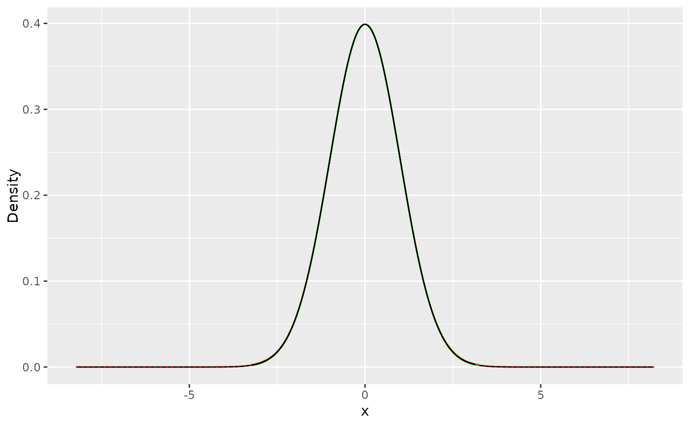
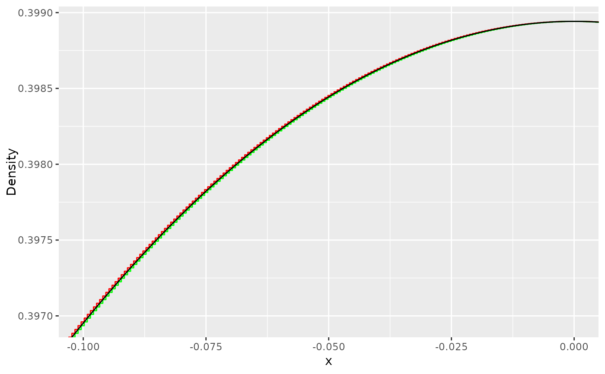

Plot Method for Proposal Objects
plot.proposal.RdThis function evaluates the properties of the included target and proposal functions to create a plot for both functions. In cases where the
proposal function's steps part is too dense, x_min and x_max can be set to crop and scale the chart for better visualization.
Usage
# S3 method for class 'proposal'
plot(x, x_min = NA, x_max = NA, ...)Arguments
- x
A list generated using STORS'
build_proposal()orproposal_optimizer()functions.- x_min
A scalar that represents the left cropping of the chart on the x-axis.
- x_max
A scalar that represents the right cropping of the chart on the x-axis.
- ...
Additional arguments passed to the
plotfunction.
Value
A plot of the target density and proposal. If ggplot2 is available, it returns a ggplot object representing the plot. otherwise, it uses the base plot() function.
Details
This method extends the generic plot() function for objects of class proposal.
It offers custom plotting functionality specifically designed for visualizing proposal objects.
Examples
# Define the density function, its logarithm,
# and its derivative for the standard normal distribution
modes_norm = 0
f_norm <- function(x) { 1 / sqrt(2 * pi) * exp(-0.5 * x^2) }
h_norm <- function(x) { log(f_norm(x)) }
h_prime_norm <- function(x) { -x }
# Build a dense proposal for the standard normal distribution
norm_proposal = build_proposal(lower = -Inf, upper = Inf, mode = modes_norm,
f = f_norm, h = h_norm, h_prime = h_prime_norm, steps = 4000)
# Plot the generated proposal
plot(norm_proposal)

# To visualize the proposal in a cropped area between -0.1 and 0
plot(norm_proposal, x_min = -0.1, x_max = 0)
